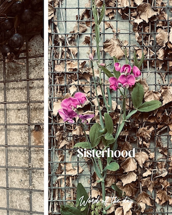
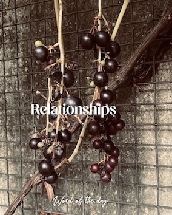

Word of the day is a daily content concept inspiring people to reflect on or dwell onto a specific word or concept. This concept came about my daily morning meditations. Standing still with a word or phrase that has been instilled in me by just being in full rest and presence while connecting with myself.
Reflecting on these words everyday has helped me tremendously in changing my mood, reflecting on my behaviour towards myself and others and motivated me to grow my self confidence into my greatest potential.
Word of the day also motivated me to make better pictures and consciously work on more content. The concept also unintentionally pushed me into more and better content development.
Posting the words daily on my social media was a way for me to express into the world that I was taking that word in. I was giving it a stage to be manifested into my day. I combined the words with images. And the more I posted, the more I got inspired to use all of my self made pictures. I always enjoyed making pictures of nature, trees, flowers, landscapes, etc. With this daily posting, I felt I could finally put these beautiful images to good use - share more of the worlds beautiful nature with others, through my eyes.
